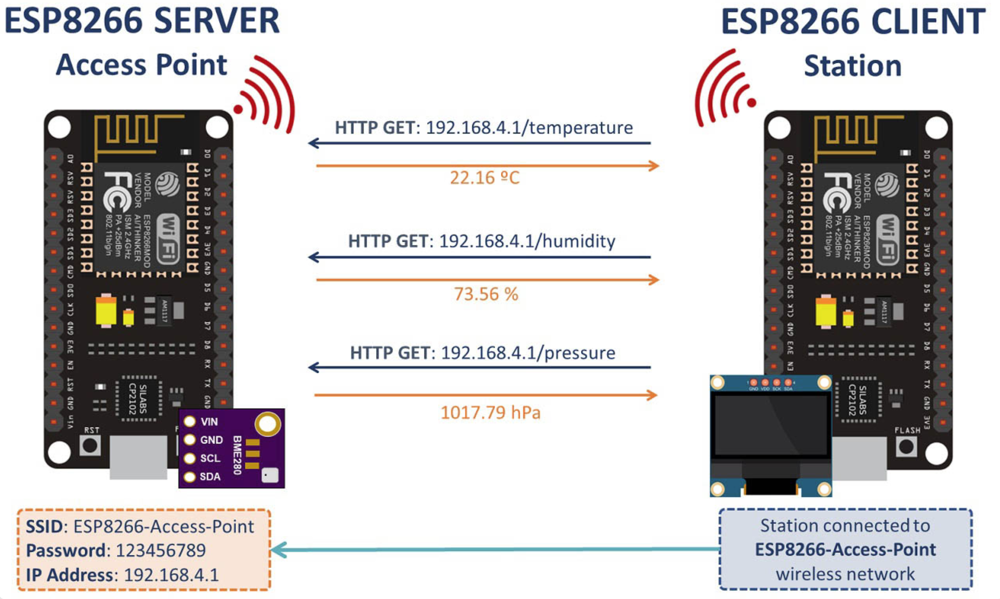
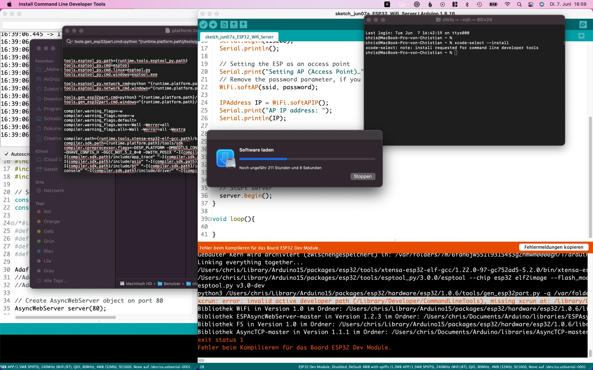
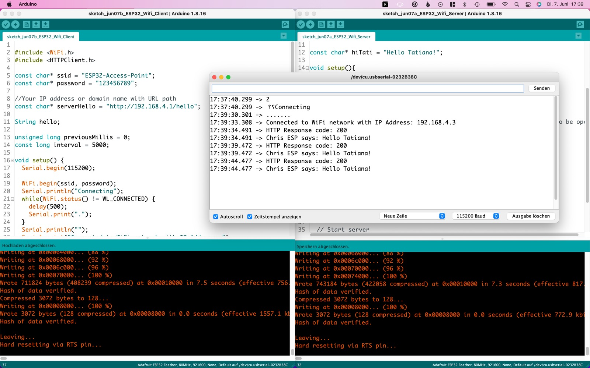
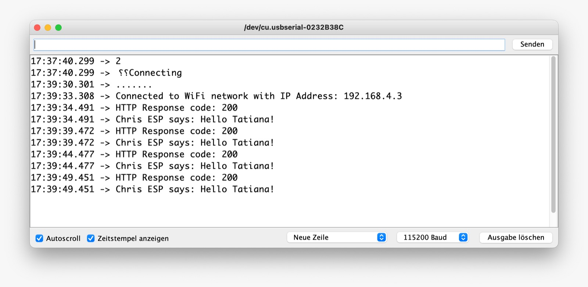
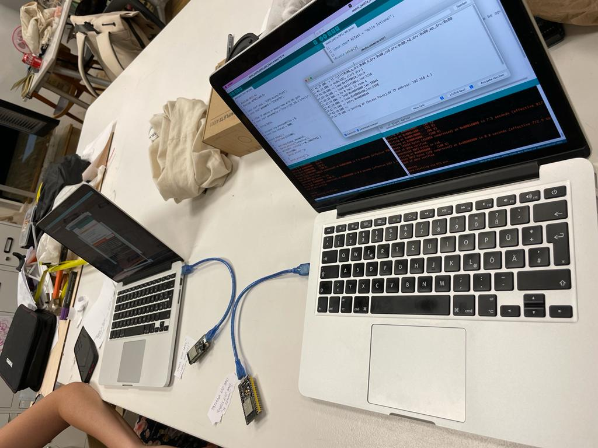
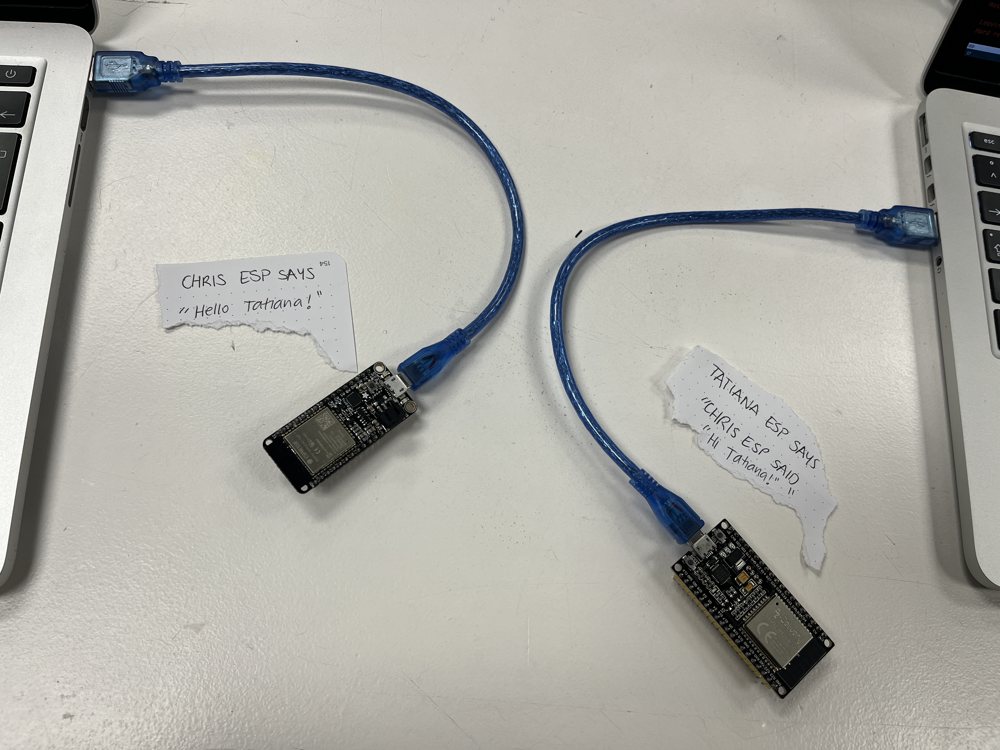

I wanted to use OSC protocols & Spout to make Resolume communicate with Touchdesigner and Processing.
I began by doing some research online about how to do this. One of the best videos I found was from an Argentinian guy explaining this process:
I followed the tutorial and got everything to work. The process involved downloading Spout, and then Spout box. Then, I implemented code in Processing which detected Spout, and then using Spout as an input in Resolume.
Top right corner: Processing code
Middle: Processing output
Left: Resolume
Spout made the Processing sketch appear in Resolume as a video, whereas Spoutbox allowed me to change the parameters of the sketch directly in the Resolume interface. The second part was definitely harder than the first, because it involved modifying files inside the the program folders.
I want to develop this further and understand how to use OSC protocols to get Touchdesigner to work with Resolume too. The videos I found about this are here:
------------------ turns out this was not the right deliverable. Let's try again
Updated text:

We used this link as our guidelines on how to make two microcontrollers communicate.
We followed this tutorial, but without using any sensors, just so we could be able to understand the communication part.
We followed the process step by step, starting by installing the necessary libraries, then connecting our two ESP32 and Arduino. We followed the tutorial which included the "Server" and "Client" code, which allowed one microcontroller to send, and the other to receive.

downloading the right libraries.


We needed to make sure that we were connected to the right wifi IP and port (11500) in order for the communication to take place.


visual comic representation of what is going on.